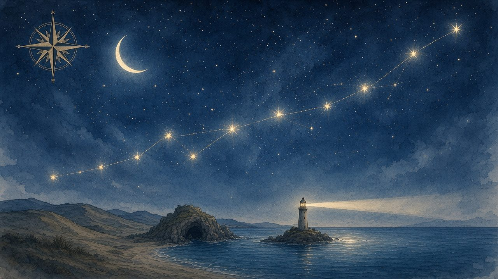

Lobsy
Sterrenkust
8B · K7R-2QM
Pauze
De route
Je route is een sterrenbeeld. Elke ster is een stop.

1
2
3
4
5
6
7
8
9
10
Lobsy
Elke 15 vragen wacht er een korte puzzel. Halverwege rust je uit op het eiland.
Lees voor
1
Strandpaal
Hier ben je
Start
2
Duinpad
Vraag 1 tot 15
3
Schelpenrij
Puzzel 1
4
Maangrot
Vraag 16 tot 30
5
Schatkaart
Puzzel 2
6
Pauze-eiland
Wat vind jij leuk?
7
Vuurtoren
Vraag 31 tot 45
8
Vuurtorenlampen
Puzzel 3
9
Sterrenbaai
Vraag 46 tot 60
10
Dit ben jij
Jouw ster
Naar het Duinpad
Andere wereld kiezen
Lobsy
Elke 15 vragen wacht er een korte puzzel. Halverwege rust je uit op het eiland.
Lees voor
 LobsySterrenkustLobsySterrenkust
LobsySterrenkustLobsySterrenkust